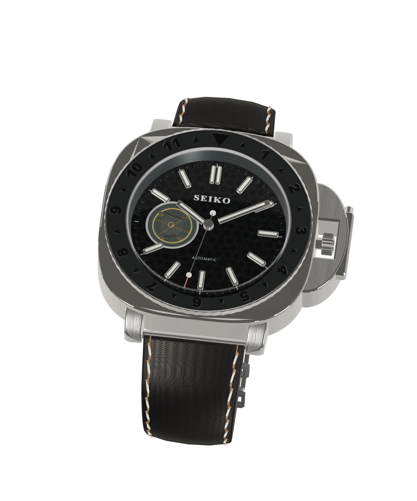
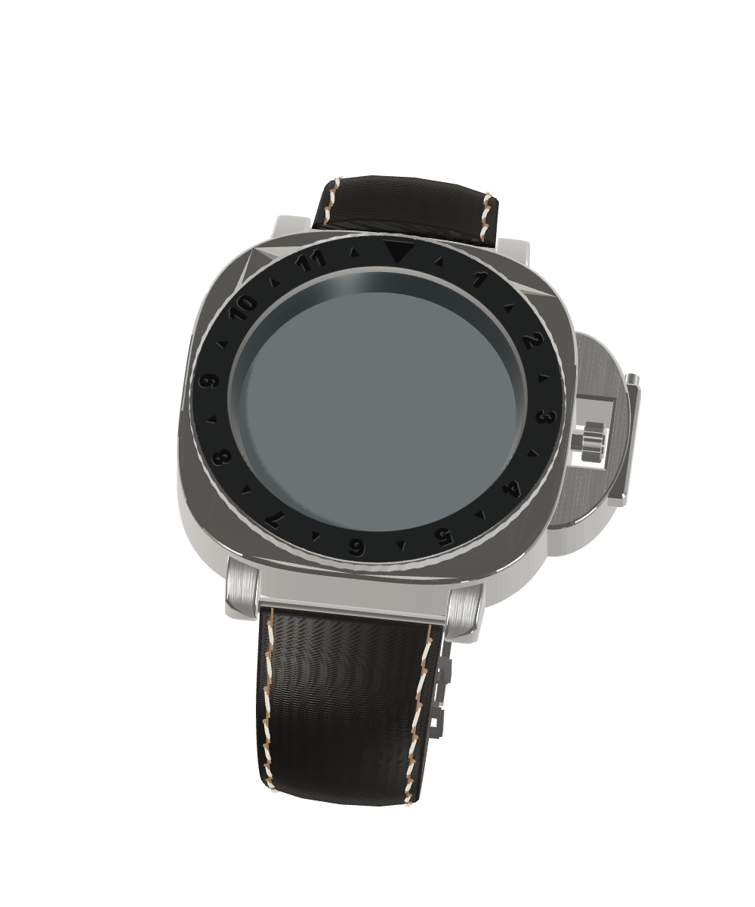
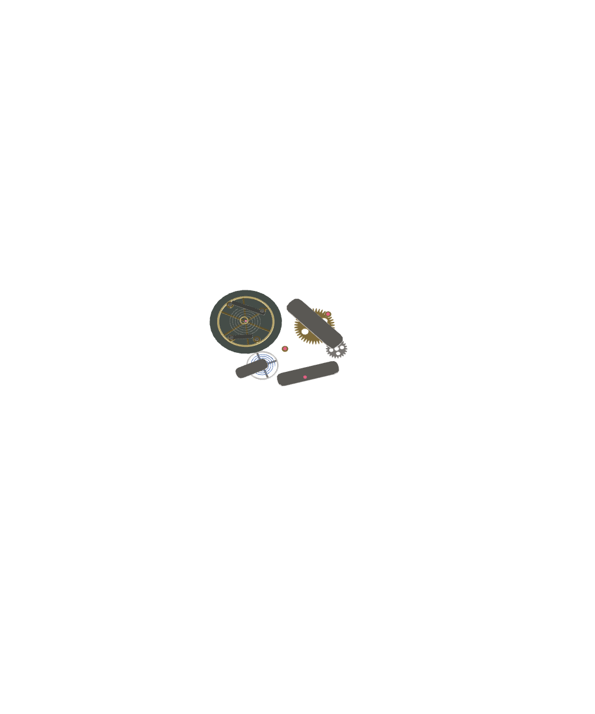
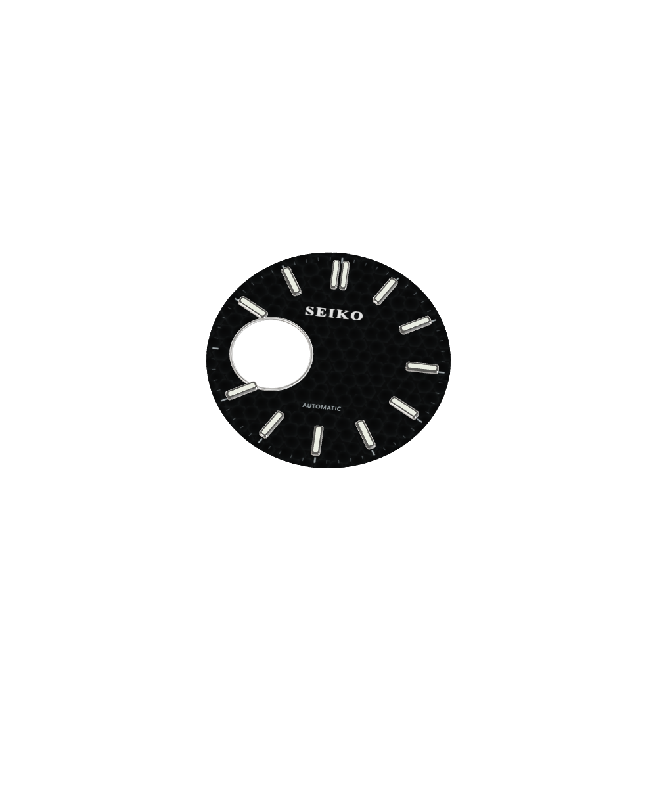
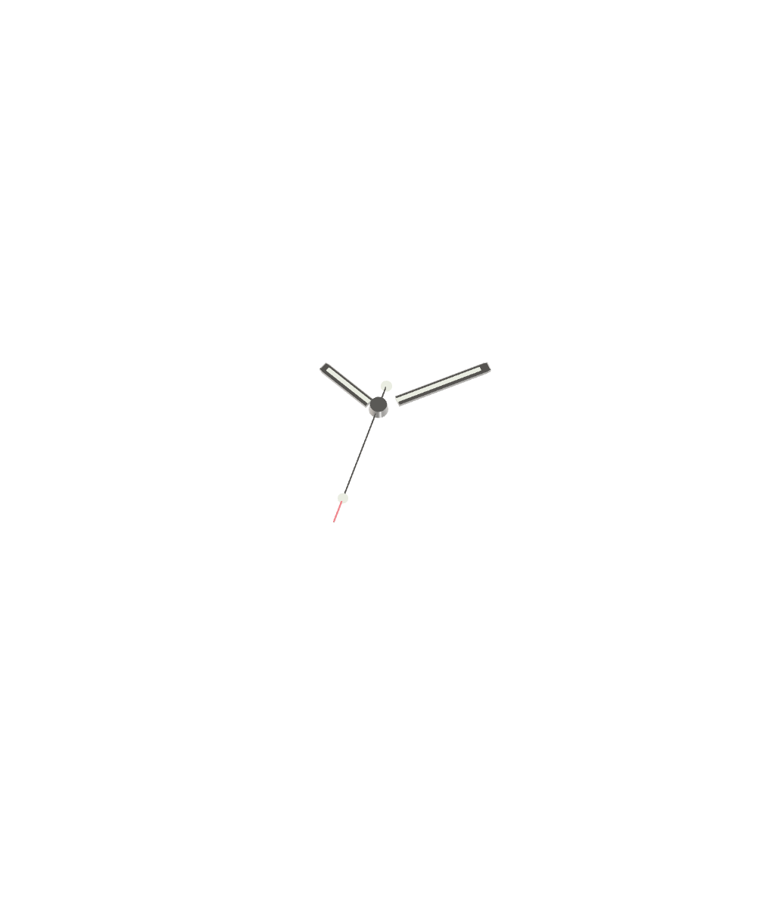
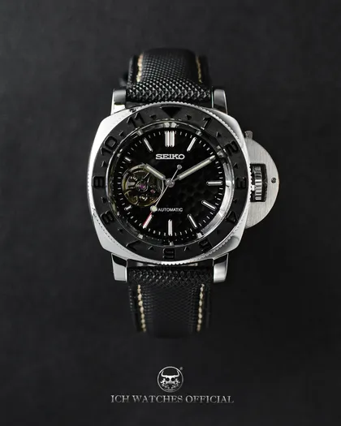
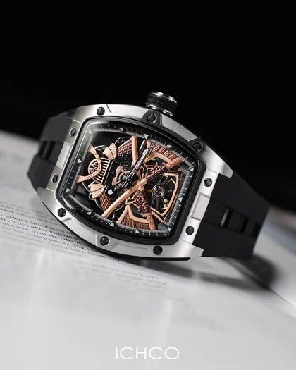
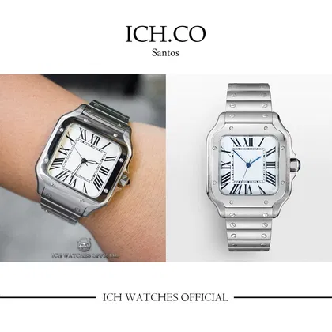

MARINA MILITARE / A STUDY IN LAYERS
一枚手錶，
層層展開。
從一眼看見的外型，走近時間的細節。
向下滑，讓每個層次慢慢展開。






- 01鏡面
- 02指針
- 03錶盤
- 04機芯示意
- 05外殼與錶帶
FIND YOUR WATCH
各有樣子，各有搭配。
先找到喜歡的系列，再依該款的實際選項挑選。
查看官網實拍，對照每組配置的售價。

ICHco / COLLECTION
義大利海軍 MM
NT$ 6,880 – 7,580

ICHco / COLLECTION
Samurai 日本武士
NT$ 7,880

ICHco / COLLECTION
Santos 方形系列
NT$ 5,880
YOUR NEXT STEP
喜歡的樣子，
也要配得明白。
分層動畫帶你看結構；商品頁幫你確認真正能選的款式。